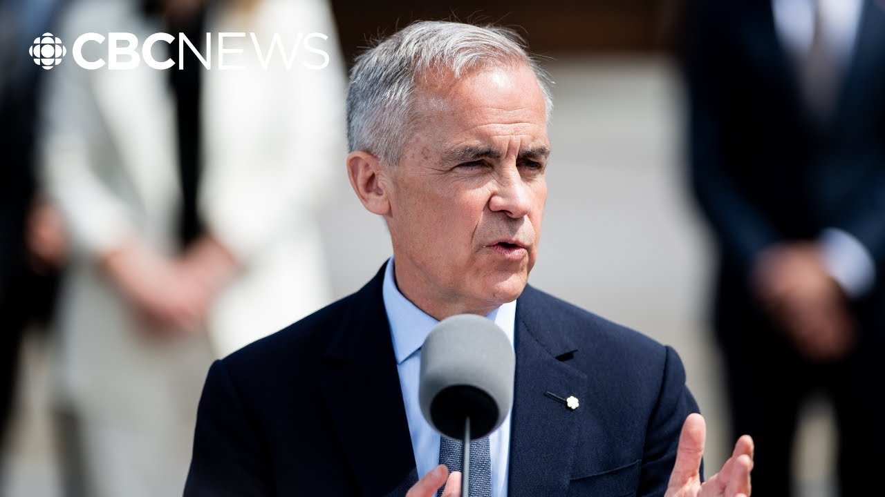

【完整演讲 | 卡尼承诺打造更强经济，称新内阁为“关键”时刻而生】
Summary: [Applause] Thank you. Hello. Mojour. Good afternoon everyone. Uh it is with great honor and greater humility that I have accepted the Governor General's request to form a new government and I share this responsibility with the members of Canada's new federal cabinet.
摘要： [掌声] 谢谢。大家好。下午好。怀着无比荣幸和谦卑的心情，我接受了总督组建新政府的请求，并与加拿大新联邦内阁成员共同承担这一责任。

⏱️ Estimated Reading Time: 9 min
I'm going to applaud them. I'm going to applaud.
我要为他们鼓掌。我要鼓掌。
Canadians elected this new government with a strong mandate to define a new economic and security relationship with the United States and to build a stronger economy for all Canadians.
加拿大人以强烈授权选出新政府，要求确立与美国的新经济安全关系，并为全体国民建设更强经济。
Canadians also sent a clear message that their cost of living must come down and that our communities must be safe.
民众也明确要求降低生活成本并保障社区安全。
The swearing in of this cabinet is amongst the fastest following an election and the beginning of the new parliament will be one of the most rapid falling election in Canadian history.
本届内阁宣誓就职速度创历史前列，新议会启动将是加拿大史上最快之一。
We are starting as we aim to go on.
我们以持续奋进的姿态启程。
Our government will deliver its mandate for change with urgency and determination.
本届政府将以紧迫感和决心落实变革使命。
We're going to deliver that mandate with a new team purpose-built for this hinge moment in Canada's history.
我们将凭借为历史关键时刻量身打造的新团队履行使命。
This cabinet is smaller and more focused than those of previous governments.
本届内阁规模更精简、目标更集中。
It will operate with a commitment to true cabinet government with everyone expected and empowered to show leadership to bring new ideas to have a clear focus and to take decisive actions to accomplish their work.
我们将践行真正内阁制，要求每位成员发挥领导力、提出新想法、明确重点并果断行动。
In return to more traditional cabinet government, our cabinet will be supported by 10 secretaries of state who will lead on key priorities within their ministers portfolios.
回归传统内阁制的同时，10位国务部长将协助推进各部核心议程。
We will govern as a team both within cabinet and within the caucus and work constructively with all parties in parliament.
我们将在内阁和党团内团队协作，并与议会各党派建设性合作。
The decisions made by this new parliament, which starts on the 26th of May, will be critical to Canada's future.
5月26日启幕的新议会决策将决定加拿大未来。
Our new government's core priorities will be outlined on the 27th of May by His Majesty King Charles III in the speech from the throne.
查尔斯三世国王将于5月27日通过御座演说阐明新政府核心施政纲领。
We will work with all our partners to meet our goals and bring about the changes requested by Canadians.
我们将联合各方实现目标，落实民众期盼的变革。
Canada is only one nation, a confederation based on the Union of Peoples, French, English, and indigenous.
加拿大是法裔、英裔与原住民共同组成的联邦国家。
Our government's approach will reflect that reality.
政府施政将体现这一现实。
We will govern as a cabinet constructively and collaboratively, working with caucus and across parties in parliament to deliver the change that Canadians want and desire.
我们将以建设性协作方式执政，联合党团和跨党派力量实现民众期待的变革。
Our new government will be a strong and reliable partner to the provinces, the territories, and to indigenous peoples.
新政府将成为各省、地区和原住民的坚实伙伴。
We will reinforce bridges across labor, business, and civil society.
我们将加强劳工、商界与公民社会的纽带。
And together, we will advance the nation building investments that will support the core mission of this government, which is to create the strongest economy in the G7, an economy that works for everyone.
通过共同推进国家建设投资，实现G7最强经济体目标，让经济普惠全民。
As our workers and businesses continue to face the unfair tariffs imposed by the United States, my government will fight for Canadians and for Canada to ensure that we can achieve the best possible agreement.
面对美国不公平关税，政府将全力争取最优协议。
In order to do that, we will take the necessary time, but no more.
为此我们会预留必要时间，但绝不拖延。
At the same time, we will reinforce our relations with reliable partners.
同时巩固与可靠伙伴的关系。
Canada, Canada has what the world needs and we defend the values that the world respects.
加拿大拥有世界所需资源，并捍卫普世价值。
We will strengthen our own economy.
我们将壮大本国经济。
An economy that creates jobs, that increases wages, and that is resilient in the face of economic shock.
创造就业、提升薪资、抵御冲击的经济体。
To achieve that, we will build a single Canadian economy, not 13.
为此要构建统一而非13个分散的国民经济体系。
and my government will have done its part in terms of reducing internal barriers with the provinces, territories and indigenous peoples to identify and catalyze projects of national significance.
政府将着力消除省际、地区及原住民间的内部壁垒，推动国家重点项目建设。
Projects that will connect Canada, deepen our ties with the world, and grow our economy for generations.
这些项目将联通全国、深化国际纽带、实现代际经济增长。
That work will be the primary focus of the first minister's meeting that's due to take place on the 2nd of June in Saskatoon.
6月2日萨斯卡通省长会议将重点推进该工作。
My government will also take immediate action with immediate legislation to fasttrack these nation building investments and to eliminate all remaining federal barriers to internal trade as our contribution to building one Canadian economy out of 13.
政府将立即立法加速国家建设项目，清除联邦内部贸易壁垒，推动13合1的国民经济建设。
In everything, we will be guided by our conviction that our economy is only strong when it serves everyone.
我们坚信：唯有普惠大众，经济才算真正强大。
That means bringing down costs for all Canadians.
这意味着降低全民生活成本。
It means making life more affordable and helping everyone to get ahead.
提升生活可负担性，助力全民发展。
To those end, my last government's first act was to cancel the consumer carbon tax.
为此上届政府首项举措即取消消费者碳税。
In this new parliament, our new government will put more money in Canadians pockets with a middle class tax cut that will take effect by Canada Day, saving two income families up to $825 a year.
新议会期间，中产减税政策将于国庆日生效，双收入家庭每年最高可省825加元。
We will also cut the GST on homes under $1 million for first-time home buyers and lower the GST on homes between 1 million and one a.5 million, helping to promote the goal of affordable home ownership.
百万加元以下首套房减免消费税，100-150万加元房产降低消费税，推动住房可负担目标。
But that goal can only truly be achieved by doubling the rate of home building in this country.
但唯有将住房建设速度翻倍才能实现该目标。
So we will build homes faster at lower costs with a smaller environmental footprint in construction and greater efficiency once families move in.
我们将加速建房、降低成本、减少施工生态影响、提升居住能效。
And in that process we will create an entirely new Canadian housing industry in modular and prefab housing using Canadian technology, Canadian skilled workers and Canadian lumber.
通过模块化预制房屋技术，打造本土技术、工匠和木材支撑的全新住房产业。
My government will work relentlessly to keep Canada secure as a sovereign nation and to keep Canadians safe in their communities.
政府将不懈维护国家主权与社区安全。
We will build a stronger Canadian armed forces to defend every inch of our territory through unprecedented investments in land, air, sea, and cyerspace.
通过陆海空天网络领域空前投入，打造更强军队捍卫每寸国土。
We will strengthen Canadian law enforcement and border security, including with a thousand new RCMP personnel and a thousand new border security officers.
新增千名骑警和边境安保人员强化执法力量。
And we will toughen the criminal code for those threatening the safety of Canadians, including making bail harder to get for those charged with stealing cars, with home invasion, or with human trafficking.
严惩危害公共安全行为，对偷车、入室、贩运人口等罪犯收紧保释条件。
We will build confidence in our justice system and do the same with our immigration system.
重塑司法与移民体系公信力。
We will bring back immigration to reasonable levels by capping the number of temporary and international students coming to Canada.
通过限制临时居民与国际学生数量使移民回归合理水平。
In every one of our actions, we will be guided by a new fiscal discipline.
所有行动都将遵循新财政纪律。
Our government will spend less so that Canadians can invest more.
政府节流让民众能更多投资。
That work has already begun and our new government will redouble its efforts starting tomorrow at the first meeting of the cabinet.
此项工作已启动，新内阁明日首次会议将加倍推进。
Canadians gave us the mandate to bring about major change quickly to build I will work tirelessly to be worthy of their trust.
民众授权我们快速实现重大变革，我定不负所托。
In this past election, more than 1,900 people put their names on a ballot and more than 19 million Canadians marked those ballots with their choice and every vote counted.
本次选举1900余位候选人获1900万选民投票，每票都至关重要。
So whether you voted for this government or not, we are in your service in the service of building a stronger, more united Canada.
无论您是否支持本届政府，我们都将为您服务，建设更强大团结的加拿大。
We will build and we will govern for all Canadians.
为全体国民而建设，为全体国民而执政。
Build big, build bold, build now.
宏大建设，勇敢建设，即刻建设。
Thank you very much. Merci cool.
非常感谢。谢谢。